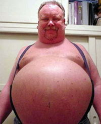

Mentiras más frecuentes
 De: La Frikipedia, la enciclopedia extremadamente seria.
De: La Frikipedia, la enciclopedia extremadamente seria.
.jpg/150px-muerto_3(2).jpg)
|
Muerto
El autor de este artículo, al parecer, se ha ido a una de sus citas al WC y suponemos que murió como el desdichado de aquí a la izquierda.
Así que en su memoria, no seas cabrón, ponle más chorradas al artículo.
|
No me mientas... tu éres un perro...
 No... en serio vieja... te juro por mi madre que no me comí el frigorífico... es que me aguante un pedo...
Mamá... por última vez, no me masturbo... pienso que soy manco (HA!, manco mis huevotes)
No hokage... no es con Photoshop... lo desarrollé naturalmente
Pero querían imagenes no??? se aguantan...
Mentira: La mayor de las más grandes por mejores de las invención del Hombre (también mujer) que involucra el estado de desesperación de un ser humano mortal común, hacía un acto inapropiado (pero aún asi hecho) el cuál intenta cubrir con Psicologia Inversa excusas, chocoaventuras, o fábulas de perros que habla, cereales que hablan y muchas veces por la Pirateria.
¿Donde comenzó toda esta mentíra?
Cuando dios creo al mundo a su imagen y semejanza:
Mentira Numero:
1.- Diós no nos ama...
2.- Diós no creo al mundo, lo cagó!!!...
3.- Chuck Norris no existio hasta el éxilio de Adán (mato todo lo que había en el Edén por poco varoníl)...
4.- Por el culo te la hinco...
5.- Diós no vendra y me hará el favor de matar al matón de mi facultad...
6.- Tu más que nadie debes saber que la justícia no existe (solo mira tu rostro en un espejo Yuck!)
7.- Si dios existiera todos seríamos maruchanes o sopas Nissin o Knorrs (según leí fuimos creados a su imagen y semejanza)
8.- Por el culo te la hinco...
9.- No te creas lo que dicen los Hermanos Saiyayin... tu mamá si te parió...
10.- Lo digo?... Por el culo te la hinco...
¿Por que mentimos?
ya lo expliqué arriba...
Por puros huevos...
¿Que no ganámos?
- Una no regañiza por parte de tus padres.
- Nos evitamos una ruptura amorosa (depende de las pruebas)
- Un por el culo te la hinco por parte de usuarios...
- Un posible mal entendido entre tu, un travesti, tu madre, y un por el culo te la hinco
¿Que perdemos?
Si todo marchó correctamente:
- Nada...
- Unps 5 minutos de tu
miserable vida
Algunas de las mentiras mas frecuentes del imbecil ser humano
- Este año me pongo a estudiar.
- No te va doler.
- Uno más y nos vamos.
- Solo reviso si tengo correo y me desconecto.
- Nunca más me tomo un trago.
- ¿Yo te debo pasta...? la verdad, no me acordaba.
- Yo pasé en amarillo.
- Págalo, por favor, que mañana te pago.
- Se me perdió tu teléfono.
- Si, el coche es mio.
- Justo estaba pensando en tí.
- Solo somos amigos.
- Se cayó solo y se rompió.
- Te estuve llamando, pero la linea aparecía como ocupada.
- ¿Así se juega la botellita?
- En cinco minutos llego.
- Te juro que nunca lo pensé.
- Por favor... yo soy una persona decente.
- Llamame en cinco minutos que estoy en una reunion.
- Sigue sigue, que yo te aviso...
- ¡¡¡Pero si estudié!!!
- ¡¡¡Te queda muy bien!!!
- El lunes empiezo la dieta.
- Si salimos, pero no paso nada...
- Jamás te olvidaré.
- Dame tiempo... necesito aclarar mis ideas.
- Claro que te amo...
- Solo la veo como amiga.
- ¿¿¿Yo??? ¿¿¿con esa??? ¡¡¡NUNCA, ni borracho!!!
- Soy virgen.
- Eres el mejor.
- Te juro que no se lo cuento a nadie
- De aquí hasta la eternidad.
- No soy como los demás.
- Tu eres la única...
- Te juro que no te estoy mintiendo.
- ¡Pero si te va a gustar!
- Verás qué bien nos lo pasamos...
- Me encantaría hacer lo que me estás proponiendo.
- Me lo pensaré.
- Es que tengo la regla.
- Es que me duele la cabeza.
- Soy mayor de edad.
- Te lo agradezco.
- No estaba pensando en nada.
- Lo que más me gusta de ti son tus ojos.
- Lo que más me gusta de ti es tu pelo.
- Lo que más me gusta de ti es tu personalidad.
- Este año me apunto a un gimnasio.
- Pues la mía es más grande.
- Casi me la ligo.
- Pero si tú me caes bien.
- No es lo que parece.
- No tengo ni idea.
- Nunca me había pasado.
- ¡Por mis cojones que este año apruebo matemáticas!
- Sólo tengo ojos para tí.
- Es que ese día no voy a poder.
- Si es que no tengo hambre.
- Enseguida salgo.
- Sigue. que vas muy bien...
- Me gusta leer.
- Yo también sé hacerlo.
- Si, yo tambien te echo de menos.
- Después te llamo, no tengo mucha bateria en el móvil.
- No te preocupes, ya me encargo yo.
- Nada mas me tomo una cerveza y me voy a dormir
- Nada mas la puntita y ya
- Este año estudio desde Agosto
Detector de mentíras
Básico, pero fuera del alcánze de todo ser humano (a menos que seas funcionário, militar, secretario o puta del presidente):
*Si quieres saber qué o quien miente... enseñale esta foto... si el sismografo se mueve rapido significa que se cago... por lo tanto no miente... pero si le muestras esta foto y se desmaya... eh ahí el culpable (Chuck ya puedes pasar a madrear a este hijoputa)
*Pónle esto apuntando justo al ojete del culo... amarralo a un hilito de poliestiréno y amarra el otro extremo con una antorcha... si el culito se hace chiquito... miente, por lo cual recibirá un golpe que nisuputamadre lo salva... si no miente, el culo se hará grande... causando el mísmo efecto
Autor(es):
- Krusher
- Cañonero
- Azulejos
- El Sevillano
- Move Zig
- Rumertey
- Frikijess23
- Cibercrank
- Lúthien
- Kevrochi
Frikipedia 2005-2016, Licencia
GFDL 1.2 - Extraído por FrikiLeaks